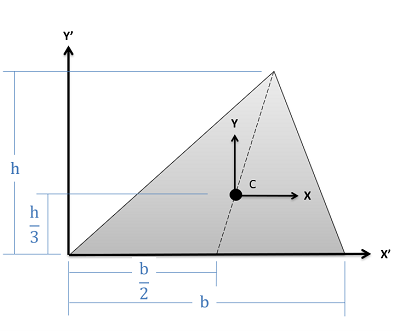

Centroids and Area Moments of Inertia for 2D Shapes
| Shape with Area and Centroid Location Shown | Rectangular Area Moments of Inertia | Polar Area Moments of Inertia |
Rectangle \[Area=bh\]
\[Area=bh\]
|
\[I_{x}=\frac{1}{12}bh^{3}\] \[I_{y}=\frac{1}{12}b^{3}h\] | \[J_{z}=\frac{1}{12}bh(b^{2}+h^{2})\] |
Right Triangle \[Area=\frac{1}{2}bh\]
\[Area=\frac{1}{2}bh\]
|
\[I_{x}=\frac{1}{36}bh^{3}\] \[I_{y}=\frac{1}{36}b^{3}h\] \[I_{x'}=\frac{1}{12}bh^{3}\] \[I_{y'}=\frac{1}{12}b^{3}h\] |
|
Triangle \[Area=\frac{1}{2}bh\] |
\[I_{x}=\frac{1}{36}bh^{3}\] \[I_{x'}=\frac{1}{12}bh^{3}\] |
|
Circle \[Area=\pi r^{2}\]
\[Area=\pi r^{2}\]
|
\[I_{x}=\frac{\pi}{4}r^{4}\] \[I_{y}=\frac{\pi}{4}r^{4}\] | \[J_{z}=\frac{\pi}{2}r^{4}\] |
Circular Annulus\[Area=\pi (r_{o}^{2}-r_{i}^{2})\] |
\[I_{x}=\frac{\pi}{4}(r_{o}^{4}-r_{i}^{4})\] \[I_{y}=\frac{\pi}{4}(r_{o}^{4}-r_{i}^{4})\] | \[J_{z}=\frac{\pi}{2}(r_{o}^{4}-r_{i}^{4})\] |
Semicircle\[Area=\frac{\pi}{2} r^{2}\] |
\[I_{x}=\left(\frac{\pi}{8}-\frac{8}{9\pi}\right) r^{4}\] \[I_{y}=\frac{\pi}{8}r^{4}\] \[I_{x'}=\frac{\pi}{8}r^{4}\] |
\[J_{z}=\left(\frac{\pi}{4}-\frac{8}{9\pi}\right) r^{4}\] |
Quarter Circle\[Area=\frac{\pi}{4} r^{2}\] |
\[I_{x}=\left(\frac{\pi}{16}-\frac{4}{9\pi}\right) r^{4}\] \[I_{y}=\left(\frac{\pi}{16}-\frac{4}{9\pi}\right) r^{4}\] \[I_{x'}=\frac{\pi}{16}r^{4}\] \[I_{y'}=\frac{\pi}{16}r^{4}\] |
\[J_{z}=\left(\frac{\pi}{8}-\frac{8}{9\pi}\right) r^{4}\] |
Ellipse \[Area=\pi ab\]
\[Area=\pi ab\]
|
\[I_{x}=\frac{\pi}{4}ab^{3}\] \[I_{y}=\frac{\pi}{4}a^{3}b\] |